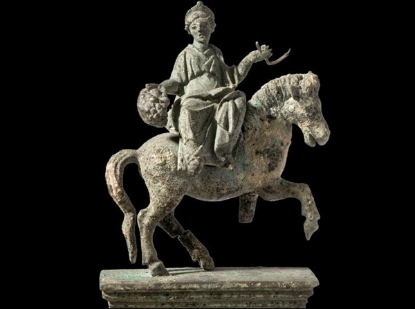
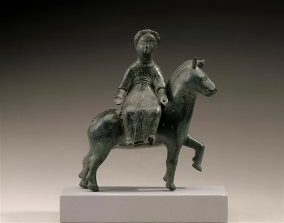
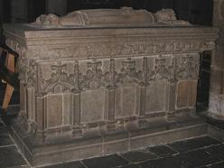
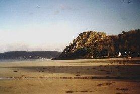
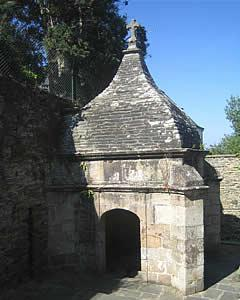
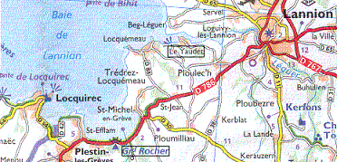

Saint Efflam et le roi Arthur
Saint Efflam and King Arthur
Dialecte de Trégor
|
- Version A Le Braz: "Autrefois en Hibernie, aucun chrétien ne pouvait se reposer. Il fut décidé de marier Efflam à Enora. Le vieux roi et sa femme acceptèrent de marier leur fille…: Efflam et le roi Arthur se promenèrent sur la lieue de grève pour s’emparer du serpent. Par ruse Efflam s’en empare et rend prisonnier le serpent d’un signe de croix. Il fait jaillir une source miraculeuse pour désaltérer les compagnons d’Arthur à bout de force. Ils tirent alors le dragon jusqu’à Roc’h Ru et l’enferment dans une faille de rocher. Le dragon demande à Efflam de quoi s’amuser. – Voici un biniou , mais tu ne pourras en jouer qu’à midi et à minuit." Notons qu'outre cette version, publiée dans les Annales de Bretagne et des Pays de l'Ouest en 1897-1898, tome 11, p.184-189 et recueillie par A. Le Braz à Plumilliau près de Plestin, cet auteur a également publié un récit très court (Annales de Bretagne 1897-1898, Tome 13, p.84-85): "A Toull-Efflam sur la grève, Il y a une jeune femme qui flotte. Son mari l'a trompée. Elle s'est noyée à cause de son mari, tenant à la main un rameau de goémon vert ." Le Braz signale, de plus, la confusion dans les chants populaires générée par la similitude des noms d'Enora et Azénor . - Version B La Villemarqué (cf. Page bretonne ): bien que les 2 versions La Villemarqué (Barzhaz et carnet 1) ne se recoupent pas  exactement et qu'on ne puisse pas affirmer que la première procède de la seconde, les 2 récits présentent les mêmes épisodes: Mariage avec Enora, départ d'Efflam, rencontre d'Arthur, jaillissement de la source, le dragon est vaincu par Efflam/Arhur, arrivée d'Enora, vie commune et séparée des époux, (découverte de la "Vie" d'Efflam). La version du cahier est par la langue, le style et l'agencement des idées d'une qualité littéraire supérieure à celle du Barzhaz.De plus, Claude Sterckx, maître d'enseignement à l'Université Libre de Bruxelles, souligne un fait très intéressant concernant les strophes 32 à 35 du chant du carnet 1: - Version C Feuille volante de Lédan : Un poème intitulé "Buez an Otrou Sant Efflam, patron Plestin" (Vie de Monsieur Saint Efflam...), en 121 couplets de 4 vers de 8 pieds, existe sous forme de feuille volante : publiée par Ledan F-00107 (fascicule de 27 pages) et d'un manuscrit autographe de 25 pages d'Alexandre Lédan, imprimeur à Morlaix. Il s'agit d'un poème dont une note en bas de la 1ère page du manuscrit nous apprend que Lédan la tient ( "am-eus bet digant..." ) de l' abbé François Marie Nayrod , recteur de Plestin. Le site ton.kan.bzh suppose qu'il s'agit de l'auteur des 3 textes imprimés par Lédan sur cette feuille volante. Composé en 1819, sur l'air de la "Gwerz de Saint Julien" et référencé C-00145, le monumental poème intitulé "Buhez Sant Efflam" est suivi d'un second chant sur le même air, intitulé "Buhez Santez Henori, bried da Sant Efflam pehini he-deus ur chapel e parrez Plestin" (Vie de Sainte Honorée, épouse de Saint Efflam qui a une chapelle dans la paroisse de Plestin). Cette "Vie de Saint Efflam" ne parle pas de la venue d'Enora-Honorée en Bretagne, mais raconte en détail les miracles imputables à son saint époux. C'est le second poème, Buhez Santez Henori , qui évoque la curieuse cohabitation du couple de saints. La thèse de M. Peaudecerf en donne ce résumé: L’auteur raconte les mêmes événements que dans le texte précédent concernant la guerre entre les deux royaumes, la paix et le mariage d’Efflam et Honorée (c. 2-20). A son réveil, Honorée découvrit le départ de son mari (c. 21). Elle se jura de le retrouver (c. 22). Peu après, elle traversa à son tour la Manche, à la grâce de Dieu et débarqua au Yeodet (c. 28-31). Un pêcheur lui indiqua où habitait Efflam (c. 32). Alors qu’elle y allait, elle fut suivie par un cavalier qui voulut abuser d’elle. La main de ce dernier fut prise dans un rocher et il n’obtint sa libération que par l’intercession d’Efflam et d'Hénori (c. 33-37). Elle se retira là où elle est encore "honorée" aujourd’hui, tout en rendant souvent visite à son mari (c. 38). L’auteur conclut par des prières à la sainte et mentionne M. et Mme Lezormel, fondateurs de la chapelle (c. 47). La feuille volante se termine, pp.25-27 par une description de la mission organisée à Plestin par les Pères Missionnaires à compter du 27 juin 1819. Inauguration d'une croix au bout de la "Cohue" (marché couvert) à l'emplacement de la croix de pierre située en face du couvent des Paulines. Renouvellement des voeux du baptême. Clôture de la mission le 11 juillet 1819, par 12 processions accueillies par l'abbé Nayrod, recteur de Plestin et d'autres ecclésiastiques. Dans les notes qui suivent le chant dans le Barzhaz de 1867 (dans les éditions de 1839 et 1845, l'argument et les notes sont consacrées exclusivement au personnage d' Arthur ), La Villemarqué attribue à la légende latine d'Efflam et Henori/Enora un récit repris pages 15 à 17 de la feuille volante, celui de la découverte de la Vie du saint : "Moins sincère que le poète breton, le rédacteur de la légende latine prétend que la 'Vie' du saint a été écrite après sa mort et même qu'on en a trouvé la lettre dans son tombeau. Cette découverte aurait été faite par un pieux ermite qui balayait par dévotion et ornait la grotte où priait le bienheureux: des gouttes de sang jaillirent un jour de terre devant lui à l'endroit où se trouvait le corps d'Efflam et le lui indiquèrent. C'est de là qu'il fut transporté dans l'église de Plestin par l'évêque de Tréguier, le 6 novembre 999, dit-on avec une pompe digne d'un saint et d'un fils de roi." (le texte breton de la feuille volante donne la même date sans préciser l'année). La Villemarqué nous indique la référence de ce texte conservé à la Bibliothèque nationale sous la cote BnF 22308 qui appartient au dossier dit des "Blancs-Manteaux". C'est Dom Denys Brient ou Briant , un bénédictin de la Congrégation de Saint-Maur né à Pleudissen près de Saint-Brieuc et mort en 1716 à Riom, un collaborateur de Dom Lobineau (1667-1727) pour la rédaction d'une histoire complète de la Bretagne, qui nous a transmis ce texte à titre de "justificatif". Dans l'argument de 1867, La Villemarqué précise que ce collecteur ne voyait dans les légendes d'Efflam et d'Enora "qu'un monument de l'esprit de fable du 14ème siècle" . En 1819, l'abbé Nayrod qui n'a pas eu ce scrupule, a traduit en vers bretons le récit de ce miracle et il entrecoupe à plusieurs reprises son propos de la remarque: "Hervez ma lenner er Vuhez" (comme on peut lire dans la 'Vita'). Le site tob.kan.bzh mentionne enfin une version que M. Drouzaut a tirée d'un manuscrit de Luzel Ms1025, cahier 15, mais malheureusement ne donne pas accès à ce texte. On ne peut donc rien en dire. On est toutefois en droit de se demander pourquoi le poème du Barzhaz publié dès 1839, avant que La Villemarqué bénéficie de la collaboration de l'abbé Henry, est si différent de celui du Carnet N°1. Ne l'aurait-il pas écrit lui-même, comme une paraphrase de ce dernier chant? Dans les éditions de 1839 et 1845, Kervarker fait remarquer que "La 1ère strophe est fortement allitérée , preuve de l'antiquité de la pièce" . Or cette allitération résulte en grande partie de mutations fautives qui ne sont corrigées compètement que dans l'édition 1867: 1837: "Eur VRenin euz-a IVReni/ En-doa eur MErc'h da zeMEhi/ Eus ar VRENhered ar VRaoan /Hag hi HENavet HENoran..." 1845: "Eur BRENin euz-a HiBRENi/ En-doa eur VErc'h da zimizi/ Euz ar BRensezed ar vrava/ Hag he haNo HeNora..." 1867: "Eur brenin eus-a Iverni/ En-doa ur verc'h da zimezi/ Eus ar briñsezed ar vravañ/ Hag hi he añv Enoran..." Dans l'édition de 1845, p. 412, on trouve cette note de bas de page à propos du mot "brenin": "Ce titre curieux, que les chanteurs dénaturent en prononçant "breiguen", se présente pour la première fois dans la poésie armoricaine; il est le diminutif du mot celtique "brenn", roi; la plupart des versions de la légende le remplacent par le mot "roué". Il est de fait que le dictionnaire du Père Grégoire de Rostrenen (1732) donne les mots "brenn, brennyn et teyrn" comme équivalents anciens (äls.) du mot "roué", traduction habituelle du français "roi". L'existence d'"autres versions de la légende" est évoquée dans une note à la page suivante, dans les éditions de 1839 et 1845 uniquement, à propos du mot "Hibernie": "Une des versions de la légende dit: "de Démétie". La Démétie est une province du Pays de Galles." (Dyved) Dans la dernière édition, les allitérations ont disparu ainsi que la remarque à leur sujet et celles à propos de la première strophe. S'agit-il d'un sursaut de sincérité de la part d'un faussaire pris à son propre piège? Il est vrai que l'appareil critique de 1867 concernant ce chant diffère du tout au tout de ses prédécesseurs et que cette remarque philologique n'y avait plus sa place: En 1839 et 1845, le sujet principal n'était pas Efflam mais Arthur , dont La Villemarqué montre, de façon fort convaincante, que la littérature fait successivement un dieu (2 poèmes de Llyfarc'h Hen), un chef de guerre historique (chez Nennius au 6ème siècle) et un chevalier féodal ( Geoffroy de Monmouth au 12ème siècle et ses successeurs). En 1977 Jean Markale intitulera les principaux chapitres de son 'Roi Arthur et la société celtique": "Le roi Arthur dans la société médiévale", "Le roi Arthur dans l'histoire" et "le mythe d'Arthur"qui se termine par le sous-chaptitre "le dieu Athur". La Villemarqué ajoute (en 1845): "l'auteur de cette légende parle d'Arthur comme s'il vivait toujours. Son héros n'est ni le dieu, ni le chef de guerre du 6ème siècle, ni le chevalier du 12ème siècle. Ce n'est pas encore l'Arthur des historiens du 10ème siècle. C'est un sauvage, un Thésée qui lutte contre les monstres et dont la force n'a rien de surnaturel. Il serait vaincu sans Efflam. Nous pensons donc que le légende du saint, dans sa forme actuelle date d'avant le 10ème siècle, époque où vivait Nennius." Si on peut envisager que le jeune La Villemarqué se soit risqué à composer lui-même le poème du Barzhaz en paraphrasant le chant qu'il a noté dans son carnet n°1, on peut être assuré que la légende telle qu'elle est rapportée dans le Barzhaz est authentique, quant à son contenu, du fait qu'elle coincide avec celle exposée par le frère Albert Le Grand qui, le premier au 17ème siècle, réunit les documents historiques qui existaient de son temps pour composer un ouvrage encyclopédique intitulé "Les Vies des Saints de la Bretagne Armorique". Dans l'édition de 1901 de cet ouvrage publié par les chanoines Thomas, Abgrall et Peyron, on trouve les épisodes suivants: - p. 583, le mariage d'Efflam respectueux de la raison d'état, mais qui, désirant se faire moine, après s'être couché auprès de son épouse, sut la convaincre de garder perpétuelle virginité et de vivre à l'extérieur comme mariée, mais devant Dieu et entre eux comme frère et soeur... Lorsqu'il la sentit bien endormie, il s'embarqua avec ses camarades vers l'Armorique et accosta sur la "lieue de Grève" près de Plestin. - p. 584, la victoire de Saint Efflam sur le dragon qui après avoir vomi du sang, "s'alla précipiter dans la mer où il mourut suffoqué des eaux; la description du monstre et le jaillissement de la source" qui désaltéra Arthur lui rendit force et santé" , ce qui lui permit de , vaincre le dragon. - p. 586, le départ d'Enora qui parvient au Coz-Guéaudet (Le Yaudet), retouve la cellule de son mari et lui fait part de son intention de vivre, elle aussi, au service de Dieu. Efflam lui construit alors une petite cellule, "lui défendant expressément l'aspect de son visage"...Ainsi menèrent-ils une vie plus angélique qu'humaine" . - le portail de l'église de Perros-Guirec daterait du 11ème siècle. Un sculpteur y aurait représenté la victoire d'Arthur sur le dragon. Un chapiteau montre, selon lui, "Efflam s'avançant et plongeant sa crosse dans la gueule du monstre, tandis que le roi, fatigué,...tient une épée qui semble prête à lui échapper." (cf. illustration). - La Villemarqué ajoute en 1867: "La croix de la grève dont on lui attribue l'érection, peut très bien être un monument de sa sollicitude pour le salut des voyageurs". - Enfin il évoque des débris d'arbres apportés par la tempête qui pourraient être le reste de la grande forêt où habitait Effram. Comme on sait ce sont désormais d'autres végétaux qui préoccupent les habitants du littoral: les algues vertes. |
- Version A published by Le Braz: "In the past in Ireland, no Christian was at peace. They decided to marry Efflam to Enora. The old king and his wife agreed to marry their daughter...: Efflam and King Arthur walked along the beach to capture the Dragon. By trick Efflam captured it: he made the Dragon prisoner by a Sign of the Cross. He made a miraculous spring gushes forth to quench Arthur's thirst, when he was at the end of his strength. They then dragged the dragon to Roc'h Ruz and locked it in a crack in the rock. The dragon asked Efflam for something to have fun with. - Here is a bagpipe , but you are allowed to play it at noon and midnight only-." Note that in addition to this version, published in "Annales de Bretagne et des Pays de l'Ouest 1897-1898", volume 11, p.184-189 and collected by A. Le Braz in Plumilliau near Plestin, this author also published a very short story ("Annales de Bretagne 1897-1898", Volume 13, p.84-85): "Near Toull-Efflam / The body of a young woman washed ashore/ Her husband had betrayed her. / She drowned herself because of her husband,/ She holds a branch of green seaweed in her hand." . Le Braz also points out the confusing similarity in folk songs of the names Enora and Azenor . - Version B noted and published by La Villemarqué (cf. Breton page ) : although both versions do not exactly overlap and there is  no certainty that the Barzhaz version comes from the First Notebook version, both stories include the same episodes: Efflam marries Enora, departure of Efflam, Efflam encounters Arthur, he makes a spring flow, the dragon is defeated by Efflam/Arthur, Enora comes to Brittany, the spouses live together and apart at a time , (discovery of Efflam's "Vita"). The Notebook version is, as far as language, style and arrangement of ideas are concerned, superior to the Barzhaz version.In addition, Claude Sterckx, lecturer at the Free University of Brussels, highlights a very interesting fact concerning stanzas 32 to 35 of the song in Notebook 1: This is not the only testimony to the survival of the Celtic horse goddess Epona (Rhiannon) in Breton tradition : - Version C on Lédan's broadside and manuscript : A poem entitled "Buez an Otrou Sant Efflam, patron Plestin" (Life of Lord Saint Efflam, patron saint of Plestin), in 121 stanzas of 4 verses of 8 feet, exists as a broadside booklet of 27 pages published by Alexandre Lédan, printer in Morlaix (F-00107) and as an autograph manuscript of 25 pages by said Lédan. It is a poem which, as stated in a bottom note on the first page of the manuscript, was handed over to Lédan ( "am-eus bet digant..." ) by Rev. François Marie Nayrod , vicar of Plestin. The site ton.kan.bzh assumes that Nayrod is the author of all the 3 texts printed by Lédan on the broadside. Composed in 1819, to the tune of the "Lament of Saint Julian", and referenced C-00145, the monumental poem entitled "Buhez Sant Efflam" is followed by a second song to the same tune, under the title "Buhez Santez Henori, bried da Sant Efflam pehini he-deus ur chapel e parrez Plestin" (Life of Saint Honora, wife of Saint Efflam whose chapel is in the parish Plestin). This “Life of Saint Efflam” does not mention the landing of Enora/Honora in Brittany, but recounts in detail the miracles made by her holy husband. The second poem, Buhez Santez Henori , evokes the strange relationship of the couple of saints. The doctoral thesis of Mr. Peaudecerf gives this summary: The author relates the same events as in the previous text: the war between two kingdoms, the peace and the marriage of Efflam and Honora (c. 2-20). When Honora woke up, her husband had left (c. 21). She vowed to find him again (c. 22). Shortly after, she in turn crossed the sea, and, by the grace of God, she landed at Yeodet in Brittany (c. 28-31). A fisherman told her where Efflam lived (c. 32). On her way there, she was followed by a horseman who attempted to rape her. His hand was caught in a rock split and only through the intercession of Efflam and Honora did he obtain his release (c. 33-37). She retired to the place where she is still "honoured" nowadays. She often visited her husband (c. 38). The poem concludes with prayers to this holy woman and mentions the names of M. and Mme Lezormel, who founded a chapel in her honour (c. 47). The broadside ends up (pp.25-27) with a description of an inland mission started in Plestin by Missionary Fathers on June 27, 1819: Inauguration of a cross at the entry of the "Cohue" (covered market), replacing a stone cross that stood opposite the Paulines convent. Renewal by the ministers and the faithful of their baptismal vows. Final celebration on July 11, 1819, with 12 processions welcomed by Father Nayrod, vicar of Plestin and other ecclesiastics. In the notes appended to the song in the 1867 issue of the Barzhaz (in the 1839 and 1845 editions, both "argument" and notes being devoted only to the character of Arthur ), La Villemarqué ascribes to the Latin legend of Efflam and Henori/Enora a story recounted on pages 15 to 17 of the broadside: the discovery of Saint Efflam's "Vita" (life story in Latin) : "Less straightforward than the Breton poet, the editor of the Latin legend claims that the 'Vita' of the saint was written after his death and that the original of it was found in his grave. This discovery was allegedly made by a pious and devoted hermit who used to sweep and clean the cave where the holy man was known to have prayed: drops of blood one day gushed forth from the ground, pointing at the very place where Efflam's body was buried. The bishop of Tréguier had the corpse transported from there to Plestin church, on November 6, 999, referredly with a pomp worthy of a saint and a king's son." (The Breton text on the broadside has the same date, however without the year). Villemarqué gives us the reference of this text kept at the National Library: N° BnF 22308, which is part of a file known as “Blancs-Manteaux”. It was Dom Denys Brient or Briant , a Benedictine monk of the Congregation of Saint-Maur, born in Pleudissen near Saint-Brieuc and died in 1716 in Riom, a collaborator to Dom Lobineau (1667-1727) for the writing of a complete history of Brittany, who saved this text as a "proof". In the "argument" to this song in the 1867 issue of the Barzhaz, La Villemarqué specifies that this collector considered the legends of Efflam and Enora "mere monuments erected by the wild imaginings of the 14th century" . In 1819, Rev. Nayrod, who was not so suspicious as Briant, translated this supernatural story into Breton verse, repeatedly interspersing his text with the remark: "Hervez ma lenner er Vuhez" (as we can read in the 'Vita'). The site tob.kan.bzh finally mentions a version that a M. Drouzaut took from a manuscript belonging to Luzel, Ms1025, notebook 15, but unfortunately it does not provide access to this text. So we can't say anything about it. And yet we may wonder why the Barzhaz poem published in 1839, before La Villemarqué could rely on the help of Abbé Henry, is so different from the hymn in Notebook No. 1. May we not surmise he could have written it himself, as a paraphrase of the notebook song? In the 1839 and 1845 editions, Kervarker points out that "The 1st stanza is strongly alliterated , which demonstrates the antiquity of the piece" . However, this alliteration results largely from faulty grammar which will not be completely corrected until the 1867 edition: 1837: "Eur VRenin euz-a IVReni/ En-doa eur MErc'h da zeMEhi/ Eus ar VRENhered ar VRaoan /Hag hi HENavet HENoran..." 1845: "Eur BRENin euz-a HiBRENi/ En-doa eur VErc'h da zimizi/ Euz ar BRensezed ar vrava/ Hag he haNo HeNora..." 1867: "Eur brenin eus-a Iverni/ En-doa ur verc'h da zimezi/ Eus ar briñsezed ar vravañ/ Hag he añv Enoran..." In the 1845 edition, p. 412, there is a footnote about the word "brenin": "This strange title, which singers usually deface by pronouncing "breiguen", occurs here for the first time in Armorican poetry; it is the diminutive of the Celtic word "brenn", king; most versions of the legend replace it with the word "roué". It is a fact that the dictionary of Rev. Grégoire de Rostrenen (1732) gives the words "brenn, brennyn and teyrn" as former equivalents (äls.) of the word "roué", the usual transcription of French "roi". The existence of "other versions of the legend" is mentioned in a note on the following page, in the 1839 and 1845 editions only, in connection with the word "Hibernia": "One of the versions of the legend says : "of Demetia". Demetia is a province (Dyved) of Wales." In the latest edition, the alliterations have disappeared as well as the remarks about them and the first stanza. Did an outburst of sincerity prompt to refrain a forger caught in his own trap? It may also be the consequence of the critical apparatus for this song in the 1867 edition being completely different from the previous, making this philological remark superfluous: In 1839 and 1845, the main subject was not Efflam but Arthur . La Villemarqué shows, in a very convincing manner, that literature successively makes of this character a god (2 poems by Llyfarc'h Hen), a historical battle leader (Nennius in the 6th century) and a feudal knight (Geoffrey of Monmouth in the 12th century and his epigones). In 1977 the historian Jean Markale titled the main chapters of his 'King Arthur and Celtic Society': 'King Arthur in medieval society', 'King Arthur in history' and 'the myth of Arthur' which ends with the underchapter "god Arthur". La Villemarqué adds (in 1845): "the author of this legend speaks of Arthur as if he were still alive. His hero is neither the god, nor the war-leader of the 6th century, nor the knight of the 12th century. But he is not yet the Arthur of the 10th century historians. He is a wild man, a Theseus who fights monsters and whose strength is not supernatural. He would be defeated without Efflam's help. Therefore our opinion is that the legend of the saint, in its present form, dates from before the 10th century, Nennius' lifetime." We may or may not admit that young La Villemarqué indulged in composing the Barzhaz poem himself by paraphrasing the song he had written down in his first notebook. But we can rely that the content of the legend, as it is reported in the Barzhaz, is authentic, since it tallies with the story told by the Rev. Albert Le Grand who, in the 17th century first gathered all historical documents extant in his lifetime to compose an encyclopedic work entitled "The Lives of the Saints of Armoric Brittany". In the 1901 edition of this work published by the canons Thomas, Abgrall and Peyron, we find the following episodes: - p. 583, marriage of Efflam obeying the reason of state, but who, wishing to become a monk, after going to bed with his wife, managed to convince her to keep perpetual virginity. They would live apparently as married people, but in their intimacy with the Lord, as brother and sister... When he saw her asleep, he embarked with his comrades towards Armorica and landed on the "Strand League" near Plestin. - p. 584, victory of Saint Efflam over the dragon who after vomiting blood, "was made to rush into the sea where it died drowned by the waters; description of the monster and gushing of the spring "which quenched Arthur's thirst, restored his strength and health" and allowed him to defeat the dragon. - p. 586, departure of Enora who reaches Coz-Guéaudet (Le Yaudet), discovers her husband's cell and tells him of her intention to live to serve God, just as he does. Efflam then builds for her a small cell, "expressly forbidding her to show him her face"...Thus their life was more angel-like than human" . - the porch of the Perros-Guirec church dates from the 11th century. A sculptor has represented what we may suppose to be Arthur's victory over the dragon. A capital shows, allegedly, "Efflam advancing and plunging his staff into the monster's mouth, while the exhausted king ...wields a sword which he holds with difficulty." (see picture). - La Villemarqué added in 1867: "The Strand Cross whose erection is ascribed to him, could very well bear witness to his concern for the safety of travellers." - Finally he mentions debris of trees brought by the storms which could be the remains of the great forest where Effram lived. As we know, other plants nowadays worry coastal residents: green seaweed. |
|
 Tombeau de Saint Efflam à Plestin-les-Grèves |

|

Chapiteau du portail de l'église de Perros-Guirec |
Mélodie - Tune
(La majeur, arrangement Friedrich Silcher, 1841).
| Français | English |
|---|---|
|
1. Il était un roi d'Hibernie, (=Irlande) Dont la fille, la plus jolie Des princesses à marier Avait pour prénom Honorée. ( ou Enora) 2 Si plus d'un l'avait demandée, Tous avaient été rejetés, Sauf Efflam, un seigneur puissant, Un fils de roi, jeune et charmant. 3. Il y a bien longtemps qu'il pense Qu'il devrait faire pénitence Dans quelque asile en la forêt, Et quitter sa jeune épousée. 4. La nuit des noces quand tous sont Plongés dans un sommeil profond, Laissant sa femme dans son lit, Il quitte la chambre sans bruit. 5. Le voilà qui sort du palais Prenant bien soin de n'éveiller Personne et s'éloigne d'un bond, Son lévrier pour compagnon. 6. Sur la côte il parvient bientôt, Se met en quête d'un bateau Et regarde de tous côtés En vain, en pleine obscurité. 7. Soudain au ciel la lune luit. Il avise non loin de lui Un petit coffre défoncé Qui vient, par les flots ballotté. 8. Efflam jusques à lui l'attire, Monte dans ce frêle navire. Et le jour n'était pas levé Qu'en Bretagne il vient s'échouer. 9. Il trouve le pays breton Plein de monstres et de dragons Qui désolaient tout le canton, Surtout le pays de Lannion. 10. Plus d'un dragon avait, bien sur, Eté tué par le Roi Arthur A qui nul autre ne saurait Pour la valeur se comparer.  11. Et lorsque Efflam descend à terre, Il voit le roi qui désespère, Son cheval gisant sur le dos, Le sang coulant par les naseaux. 12. Face à lui, le monstre sauvage Un seul oeil rouge en son visage, Des écailles vertes et grand Comme un taurillon de deux ans. 13. Sa queue c'est une vis de fer . Sa gueule, l'entrée des enfers, D'une oreille à l'autre est armée De dents aiguës de sanglier. 14. Sans pouvoir se vaincre l'un l'autre, Trois jours qu'ils luttent de la sorte. Le roi pensait s'évanouir Lorsqu'il a vu Efflam venir. 15. Le roi Arthur, presque mourant, Dit à Effkamm, en gémissant: - Donnez-moi, seigneur pèlerin, Un peu d'eau, si vous voulez bien. 16. - Avec l'aide du Dieu béni L'eau jaillira de ce roc-ci. - Et, se servant de sa baguette, Trois fois frappe la Roche Verte. 17. Voilà qu'une source jaillit Du roc dans l'instant qui suivit. Arthur s'y est désaltéré, Recouvrant et force et santé. 18. Il retourne vers le dragon, Lui enfonce son espadon Dans la gueule. et, jetant un cri, Le monstre en la mer s'engloutit. 19. Le roi, après l'avoir occis, Se tourne vers le saint et dit: - Venez à mon palais sur l'heure. Je veux faire votre bonheur. 20. - Je dois refuser cette invite. Je désire me faire ermite, Et, si vous permettez, passer Toute ma vie sur ce rocher. II 21. Honorée, le matin suivant Se demandait en s'éveillant, Trouvant ainsi vide son lit, Où donc était son cher mari. 22. Comme une abondante rivière, De ses yeux des larmes amères Coulaient, pauvre épouse trahie Par son ami, par son mari. 23. Elle pleura le jour entier Sans qu'elle put se consoler. Après dîner elle pleura Sans retrouver espoir ni joie, 24. Lorsque, tombant en pamoison, Elle eut en songe une vision: Son mari se tenait près d'elle Aussi beau que l'astre du ciel. 25. Il lui disait: - Suivez-moi, femme, Il le faut, pour sauver votre âme. Rejoignez-moi dans mon désert Où le salut vous est ouvert. 26. Dans son sommeil elle lui dit: - Oui, je vous suivrai, mon ami, Et je veux être consacrée A Dieu, pour être aussi sauvée. - 27. Les anciens disent, chose étrange, Qu'elle fut portée par des anges, Endormie, par delà les mers, Jusqu'au seuil de l'époux si cher. 28. Etant transportée de la sorte, Trois coups elle frappe à la porte. - Je suis votre amie, votre femme Que Dieu mena vers vous Efflam. 29. A sa voix, il la reconnaît Et s'empresse de se lever. Il place ses mains dans les siennes Et lui tient des propos amènes. 30. Une cabane il lui construit A gauche de son propre abri, Face à la fontaine et derrière La Roche Verte, en genêts verts. 31. Et ils demeurent là longtemps. Puis dans le pays se répand Le bruit des miracles qu'ils font. Et les visiteurs sont légion. 32. Une nuit, les marins en mer Virent le firmament ouvert, Tandis que résonnait des anges L'auguste concert de louanges. 33. Le lendemain une pauvresse Qui, n'ayant plus de lait, s'adresse A Honorée, s'en vient portant En ses bras son enfant mourant. 34. Sur le seuil, elle a beau gémir, Personne ne vient lui ouvrir. Alors, à travers une fente, Elle voit la dame gisante. 35. Morte et belle comme un soleil. Et brillant d'un éclat pareil. Et vers elle, à genoux, se penche Un bel enfant en robe blanche. 36. Aussitôt cette pauvre femme Se précipite chez Efflam Dont la porte est ouverte encor. Comme sa femme, il était mort. 37. Afin qu'on n'oublie point ces choses Qu'en nul livre on ne trouve encloses, En vers, ici, on les a mises Pour les chanter dans les églises. |
1. A high ruler of Hibernia (=Ireland) Had once a daughter to marry A comely princess of high fame And fair Enora was her name. (or Honora) 2. By many a prince she was wooed, But all of them she had refused, Except the mighty lord Efflam, Son of a king, young and handsome. 3. But Efflam had made up his mind: A wood hermitage he would find And would do penance all his life. So that he must give up his wife. 4. The very night of his wedding, When everybody was sleeping, Quick, he got up from beside her And left noiselessly the chamber. 5. He left the palace, taking care That nobody should be aware. He went. His only companion Upon his flight was his greyhound. 6. He went to the shore and he sought To put to sea a fitting boat. He did not find, look as he might, Any boat, so dark was the night. 7. When the moon broke, washed by the tide, He perceived, floating by his side, A small chest some vessel had lost Which about the sea was tossed. 8. He drew it near, climbed into it, As he deemed it for travelling fit. And the next day had not yet dawned When in Brittany he landed. 9. But he found Brittany ravaged By beasts and dragons, most savage, That wreaked havoc everywhere And, above all, in Lannion shire. 10. Some of them were killed already By the high king of Brittany, Arthur, who was, since he was born A man brave and second to none. 11. When Saint Efflam disembarked, He saw the king who combated. His horse lay dead on its back, gored, With blood out of its nose that poured. 12 Opposite him a beast of dread: With a sole red eye in its head, Green scales all around its shoulders As tall as a bull of two years. 13. Its tail was like an iron screw And its mouth was, all the way through, From ear to ear, full of tusks white And sharp, a monstrous boar alike. 14. They had been fighting for three days Neither of them carried the day. And the king was going to swoon If some help was not to come soon. 15. And King Arthur said on seeing Saint Efflam who came towards him: - Would you care, pilgrim, if you please, For me water to fetch and give? 16. - If it is almighty God's mind Enough water for you I'll find. - With the tip of his stick he struck Three times the top of the Green Rock. 17. So that a source began to spill From the very top of the hill. Which was apt Arthur's thirst to quench And to give him back health and strength.  18. Back on the dragon, with God's aid, He drove into its mouth his blade, So that the beast giving loud squeals Fell in the sea, head over heels. 19. The king, after this victory, To the man of God said fairly: - Pray, do come to Arthur's palace You shall have there bliss and solace. 20. - With your leave, Lord, It shall not be. I came here to be solitary. I shall stay, if it is God's will, As long I live upon this hill. II 21. Enora, very, much surprised The next morning, could not surmise What in the night could have happened And whither had gone her dear friend. 22. As water flows in a river, From her eyes the tears burst over. When she saw she was abandoned By her friend who was her husband. 23. So, all through the day. did she cry. She cried still when the night was nigh, Not knowing how to soothe her soul. By no one could she be consoled. 24. She went to sleep, much exhausted, Was by a vision visited: She saw, next to her, her husband As the sparkling sun, as handsome. 25. He told her: - Come to me, won't you? If you want your soul to rescue. Come without procrastination To my heath, for your salvation. - 26. And she answered in her slumber: - I'll follow you, wheresoever For your sake and become a nun, So as to gain my salvation. - 27. People of old have sworn to it: Angels came to give her a lift, - She was asleep -, over the sea To her husband in Brittany. 28. When on his threshold she awoke, She gave onto the door three strokes: - It's me, your sweetheart and your wife Whom God brought here to spend her life. 29. And he, who knew her by her voice Got up and rushed to her at once. And he took her hands in his hands, Telling her of God's great demands, 30. Made a hut for her to abide, Next to his, on the left hand side, Covered with broom, facing the spring, Sheltered by the Green Rock from the wind. 31. For a long time the two dwelt there, Until the fame that spread afar Of all the miracles they wrought A great many folks to them brought. 32. One night, sailors who were at sea, Were suddenly all filled with glee, Seeing the gates of Heaven raise And hearing angels sing in praise. 33. And next morning, there was a quest: (A poor woman that gave the breast Had no milk and her child did faint) For help from Enora the Saint. 34. Cry as she would on the threshold, No one came the screen to unfold. But when she peeped into the shed: The lady lay dead in her bed. 35. She was, as the fair sun, as bright And the whole cabin full of light. Next to her, a boy, clad in white, Waked her, on his knees, by her side. 36. And, at once, hurriedly she ran To warn Efflam, the holy man: Found his cabin's door wide open And he was dead, like the woman. 37. All these things, to be remembered, That in no book are recorded, Were put to verses to be sung In churches, in your mother tongue. |
(Texte Breton Text)

|
Efflam et Enora
Saint Efflam, qui a son tombeau à Plestin, est le saint le plus populaire du Trégor, ainsi que sa femme, Sainte Enora, patronne des nourrices bretonnes. L'histoire Le soir même de ses noces, qu'on lui a imposées pour des raisons politiques, avec la princesse Enora, Efflam s'embarque pour la Bretagne. Là, il aide Arthur à triompher d'un dragon qu'il combattait sur la plage depuis trois jours (une allégorie de la pollution?), en faisant jaillir d'un rocher une source où Arthur se désaltère. Il refuse l'invitation d'Arthur de le suivre dans son palais, et se fait ermite. La plage où elle se déroula la lutte entre Arthur et le dragon est la "Lieue de Grève", près de Plestin, dont il est question dans "Le pauvre clerc" . Enora est transportée par les anges au seuil de son ermitage. Il lui aménage une cabane à proximité. Après toute une vie de voisinage sans cohabitation, ils furent retrouvés morts le même jour. Font-ils encore chambre à part au paradis? Autres versions Bien que La Villemarqué s'applique à la vieillir à l'aide de mots étranges - le premier mot "ur brenin" pour "un prince" est un mot gallois, inconnu des dictionnaires bretons -, cette gwerz reprend des éléments tirés de textes plus anciens. L'auteur du Barzhaz signale dans ses "notes" l'existence d'une "Vie de St Efflam" en latin qui relate d'abord la découverte du corps du Saint, accompagné d'une lettre , avant qu'il soit transféré à Plestin en 999. Dans cette version, Enora, traverse la mer dans un coracle (barque de cuir irlandaise) et s'échoue au Yaudet (cf. carte ci-dessous). Comme dans bien d'autres "vitae" (vie de St Patern, St Kado, St Gildas, St Carantec), Arthur joue ici un rôle peu honorable: il ne peut venir à bout du dragon sans l'aide du saint. Certains historiens en déduisent que ces "vitae" sont antérieures à l"'Histoire des Rois de Bretagne", rédigée en latin entre 1135 et 1138 par Geoffroy de Monmouth, laquelle fait d'Arthur le héros positif que l'on connaît, (y compris dans certains chants bretons. Cf. note à propos de La Marche d'Arthur ). La description de la forêt où Efflam succède à St Gestin, comme un lieu magique où nul ne vient ramasser une branche pourrie tombée à terre est copiée de celle par l'auteur latin Lucain de la Forêt de Marseille. La "vita" de St Efflam contient des allusions à deux donations : l'une, à titre de compensation, par le "tyran" du Yaudet, frappé par le saint de paralysie pour avoir voulu attenter à l'honneur de son épouse Enora (ou Honora). L'autre par le "roi"- en qui le frère Albert Le Grand , qui rédigea ses "Vies des Saints de la Bretagne Armorique" au début du 17ème siècle, reconnaît le duc Geoffroy I qui régna de 992 à 1008. La légende est reprise par un office à l'usage de la paroisse de Plestin datant de 1575, puis par Albert Le Grand, puis par des cantiques bretons dont celui du Barzhaz. Une version recueillie par Anatole le Braz (1859-1926) à Saint-Efflam, nous apprend que: « Tous les ans, la veille de Noël, (ce dragon) réclamait une proie humaine, et non la première venue : il fallait qu'elle fût de sang royal. On la lui apportait, à la tombée du soir, au pied du contrefort isolé qui domine la grève, à mi-route de Saint-Michel à Plestin, et qui porte, depuis lors, le nom sinistre de Roc'h Al Laz (le Rocher du Meurtre). On était également tenu de lui livrer tous les enfants morts sans baptême ». Un personnage à la fois divin et royal, en l'occurrence Arthur, est appelé à tuer ce dragon, mais il est incapable de le vaincre sans l'aide d'un héros. Ce schéma dramatique remonte à la plus haute antiquité. Il existe en effet un texte hittite (1900-1100 avant JC) qui raconte l'histoire similaire de Hupasiya et de sa maîtresse...Inara! La fontaine de Saint-Efflam, à Plestin-les Grèves Pour des raisons évidentes, Efflam est le patron des maris jaloux. La source qu'il fit jaillir est l'objet d'une consultation dans le domaine de la fidélité des couples. Elle consiste à faire flotter sur l'eau qui en sort deux morceaux de pain, dont l'un représente la jeune fille et l'autre le garçon. L'eau s'écoule dans un bassin d' où, après avoir tourbillonné elle se rend dans un déversoir. Si durant tout ce trajet, les deux morceaux flottent en conservant la distance qui les séparait au début de la course, le mariage se fera prochainement, sinon il ne se fera peut-être jamais. Ce rituel fat suite à un autre plus ancien: trois morceaux de pain, représentant respectivement la femme, le mari et le saint. Si le dernier morceau s’éloignait des deux autres, les soupçons du mari étaient confirmés (attesté par A. Le Braz fin 19ème siècle). Célibat des prêtres Le premier concile d'Arles (314) entérinait une législation interdisant aux évêques, prêtres et diacres d'avoir des relations conjugales avec leurs épouses sous peine d'exclusion du clergé, dans des termes qui suggèrent qu'on respectait ainsi une tradition ancienne remontant aux premiers apôtres. C'est pourquoi, les hagiographes bretons étaient bien embarrassés avec leurs saints et saintes qui étaient mariés, comme dans le cas présent que certains considèrent comme une allégorie du confessionnal (Efflam écoutant Honora à travers la porte. -Cf. aussi, les "Dangers de la confession" - note sur Le prêtre exilé ). Tradition orale Le dernier couplet de ce cantique souligne l'importance de l'oralité dans la littérature de Basse Bretagne. C'est une caractéristique qu'elle a en commun avec les autres peuples celtes, comme le notait déjà César dans "la Guerre des Gaules" (chap; 12. par. 14). Cette tradition multiséculaire et exigeante explique le long développement des "gwerzioù", en particulier celles du Barzhaz, qui ont permis la transmission de force légendes, faits historiques et anecdotes, avec le souci de garantir la vérité et d'aider la mémoire. La Roche verte La multiplicité des légendes qui s'entrecroisent se reflète dans les différents noms donnés au rocher qui surplombe la Lieue de Grève. Dans la gwerz du Barzhaz elle est appelée "Roc'h c'hlas" (roche verte). Dans la dernières strophe de La prophétie de Gwenc'hlan , elle apparaît sous la forme "Roc'h Al Laz" (Roche du meurtre). L'auteur de la "Vita" l'appelle roche de "Roc'h Hyrglas" (Longue Roche Verte)... Anatole Le Braz dans "Vieilles histoires du Pays Breton" l'appelle "Roc'h Kerlèz". Le folkloriste François Luzel (1821-1895) en a relevé d'autres (Revue de Bretagne et Vendée 1865): Roc'h Kellaz, Roc'h Garlan, Roc'h Laz Dans le poème moderne de Charles Goffic "Ar Roc'h Allas", il faut comprendre "Roche de l'hélas!": "Etal ar c'hozh stankoù a zo ur garreg glas Ur garreg glas ha krenn añvet ar "Roc'h Allas". Ha war ar garreg-se neb a ra e ziskuizh, A chom 'vit e vuez disjoa ha langis... "Auprès des vieux étangs, il est un rocher noir Et abrupt nommé "le Rocher du désespoir". A son flanc le marcheur qui s'adosse, lassé A jamais restera triste et découragé..." Comme on le voit ci-dessous, la carte Michelin lui donne le nom plus prosaïque de " Grand Rocher ". |
Efflam and Enora
Saint Efflam is the most popular Saint of the Tréguier bishopric, as well as his wife, Saint Enora, the patron saint of Breton wet-nurses. The story On the very evening of his wedding with Princess Enora for political purposes, Efflam embarks for Brittany. There he assists Arthur in killing a dragon the latter had been combating for three days (an allegory for sea pollution?), by causing a spring to gush forth from a rock, thus allowing Arthur to quench his thirst. But he turns down Arthur's offer to follow him to his palace and he becomes a hermit. The strand where the combat of Arthur and the dragon took place is the "Strand League", near Plestin, already addressed in "The Poor Clerk" . Enora is transported by angels before the door of his hut. Efflam arranges a cabin nearby. After a whole lifetime spent in mutual vicinity without cohabitation, both of them were found dead the same day. Do they still sleep apart in paradise? Other versions In spite of La Villemarqué's endeavours to make his songs look much older than they are in fact, larding them with strange words, like the Welsh "brennin" for "prince" at the very beginning of the present hymn, the latter is based on more ancient texts. La Villemarqué hints in his "notes" following the song at a Latin "Vita Euflami" (Life of Saint Efflam) which tells us how the Saint's relics were discovered, -along with a document called "letter" , and transferred to Plestin in 999. In this version, Enora crosses the sea in an Irish leather boat ("coracle") and land in Yaudet (see map below). Like in many other "vitae" (Life of St Patern, St Kado, St Gildas, St Carantec), Arthur plays here a pitiable part: he can't manage to kill the dragon without the help of the Saint. Some historians infer that the "vitae" are older than the "History of the Kings of Britain" written in Latin between 1135 and 1138 by Geoffroy of Monmouth, where Arthur is the positive hero extolled, from then on, in all fiction, including Breton folk songs (See note to March of Arthur ). The description of the forest (where Efflam succeeded a previous hermit, St Gestin), as a magic place, where no one was so rash as to even pick up rotten branches fallen onto the ground, is a paraphrase of the description of the Marseilles forest by the Latin poet Lucan. The "Vita Euflami" contains allusions to two donations , one made as a compensation by the "tyrant' of Yaudet who had been paralyzed by the Saint when he tried to rape Enora. The other donation was made by "the king", whom the Rev. Albert Le Grand , in his "Lives of the Saints of Brittany" written at the beginning of the 17th century, considered to be Duke Geoffrey I who reigned from 992 till 1008. The legend is also found in a 1575 collection of prayers for Plestin church, then in Albert Le Grand's book and in a score of Breton hymns, among them the present song. In a version of the song collected by Anatole Le Braz (1859-1926) in Saint-Efflam village, we read: "Every year on Christmas eve (this dragon) claimed a human prey of choice: royal offspring. The victim was brought for him, at sunset, to the foot of the rocky headland towering over the Strand League, half way between Saint-Michel-en-Grève and Plestin-les-Grèves, known therefore as Roc'h Al Laz (The Murder's Rock). The monster was also fed with stillborn, unchristened children. A superhuman being, both divine and royal, -Arthur in the present case-, is called upon to kill the dragon, but is unable to overcome without the help of a hero. This schema can be traced back to the remotest antiquity. We know, in fact, a Hittite text (1900 - 1100 BC) recounting the similar story of Hupasiya and his mistress...Inara, (a name very much reminding of Enora)! The Saint Efflam Fountain at Plestin-Les-Grèves For mysterious(?) reasons, Efflam is invoked by jealous husbands! The source the Saint made spurt out from the rock is used to check how reliable a couple's relationship is. The test consists of floating on the outpouring flow two bits of bread, one of them representing the future bride, and the other the bridegroom. The water flows into a basin, and from there whirls into a gully. If the two bits of bread stay the same distance from one another, all the way down, the couple is sure to marry soon. If they don't, maybe they never will. This ritual is the revival or the continuation of an older one, involving three pieces of bread, representing respectively, the wife, the husband and the Saint. If the latter drifts away from the other two, the husband has a good reason for being suspicious (according to Anatole Le Braz, late 19th century). Celibacy of priests The First Council of Arles (314) enacted legislation forbidding all bishops, priests, and deacons to have conjugal relations with their wives on penalty of exclusion from the clergy with a wording suggesting the maintaining of a previously established tradition, reaching as far back as apostolic times. Therefore, the Breton hagiographers were ill at ease when they had to report on Saints of both genders who were married, like in the present case which could be considered an allegory of the confession bench (Efflam listening to Enora through the door -See also "the Dangers of Confession" in the footnote to The Exiled Priest ). Oral tradition The last verse of this hymn points out the outstanding importance of oral tradition in Breton literature, a feature common to the Celtic world as a whole, already mentioned by Ceasar in his "Gallic Wars" (chap. 12, par.14). This ancient and demanding tradition accounts for the very long "gwerzioù", included in particular in the Barzhaz. They convey all sorts of legends, historical facts and anecdotes, in a way apt to preserve the truth and assist memory. The Green Rock The manifoldness of the tales intertwined in this fiction is paralleled by the multiplicity of the names given the rock overhanging the Strand League. In the present song it is named "Roc'h c'hlas" (the Green Rock). In the last verse of Gwenc'hlan's prophecy , it is referred to as the "Roc'h Al Laz" (Murder Rock). The Latin "Vita" calls it "Roc'h Hyrglas" (Great Green Rock)... Anatole Le Braz titles it "Roc'h Kerlèz" in his "Old stories of the Breton land". The folklorist Francis Luzel (1821-1895) records some other names in the "Brittany and Vendée Review", 1865: Roc'h Kellaz, Roc'h Garlan, Roc'h Laz. In the following modern poem by Charles Goffic, "Ar Roc'h Allas", the title should be understood as the "Woe Rock": "Etal ar c'hozh stankoù a zo ur garreg glas Ur garreg glas ha krenn añvet ar "Roc'h Allas". Ha war ar garreg-se neb a ra e ziskuizh, A chom 'vit e vuez disjoa ha langis... "Over the stagnant pools there looms a gloomy rock, Dull and steep "Roc'h Allas", the Rock of hopeless walk. Whoever on his way stops here, hoping for rest, Will remain forever despondent and distressed..." It appears, on the Michelin map below, that the more trivial name "Grand Rocher" (Big rock) is preferred nowadays. |

Les Dépouilles de l'Abîme - The Spoils of the Otherworld